Products
B/W Controls
-
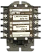
1500 Series Induction Relay:
The 1500 Series Induction Relay has the highest quality and durability. Available with 1, 2, or 3 isolated double break contacts,
field adjustable contacts so you can change from Normally Open to Normally Closed. All contacts are rated 25 Amps at 120/240 VAC.
-
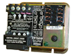
5200 / 5300 Series Solid State / Intrinsically Safe Relays:
The 5200 Series Solid State Relay are designed to provide optimum stability and reliability for
controlling a wide variety of high and low resistance liquids.
The 5300 Series Intrinsically Safe Relay are designed especially to provide an intrinsically safe and economical means of detecting and controlling a
wide range of processing variables.
-
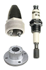
6012 Series Electrode Holders:
B/W Controls offers a variety of electrode holders to meet mounting, pressure, and temperature requirements. Most holders have watertight protection for conduit
or cable entrance. B/W Controls offers holders and electrodes in many different materials for the most corrosive or high temperature applications.
-
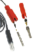
6013 Series Electrodes:
The B/W electrode sensors are available in several varieties: solid rod (rigid), wire suspension, and standard gland plugs for high
vibration applications. In addition, we offer custom options made per customer’s requirements. Electrodes made from 316SS, Brass, Monel,
Nickel, Carpenter 20, Hastelloy B, Hastelloy C, and Titanium provide compatibility for almost all applications and environments. We cover
the sewage pumping stations, elevated tanks, shallow and deep wells, hydropneumatic tank, storm drain type, cooling towers and many more applications.
-
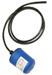
7010 Series Float Switch:
7010 Switch Float Assemblies- The B/W Controls Float Switches are tilt actuated liquid level controls, designed to operate pumps, valves,
multiple alternators, relays, contactors, alarms and similar equipment for industrial and commercial use. The wide angle, tilt-option uses
a mechanical switch inside the float, while a hermetically sealed, axially nonposition-sensitive mercury switch is the narrow angle option.
These floats provide a reliable, long-lasting level control suitable for most liquid environments up to 160 F.
-
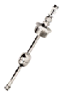
7330 Series ProStix II:
The Series 7330 Pro-Stik II supersedes the 7220 and 7300. This product combines the reliability and resolution of magnetostrictive continuous
absolute positioning sensing with the Stik package to create a unique level measuring instrument. The magnetostrictive technology is the same as
used in Gemco LDT sensors. Ametek liquid level sensors, have been proven in demanding applications such as underground leak detection and inventory
management. The 7330 is available with a rigid 316 stainless steel or flexible PVDF materials.
RXC Instruments
-
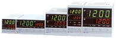
CB series Temp Controllers:
CB series is the state-of-the-art temperature controller developed to pursue "easy and user-friendly" temperature control. It provides
easy-operating, versatile functions including Self-tuning and stable control with 0.3% measurement accuracy.
-
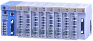
SR Mini Process Control:
SR Mini HG multi-point control system, while maintaining the compactness of the ordinary SR Mini system, is an innovative hybrid type
control system which enables the sequencers of other manufacturers to be connected in combination.
-
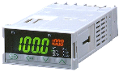
SA200 Series Single Loop Controller:
The SA200 is a new high performance temperature controller specifically designed for applications where panel space is critical yet
maximum control performance is required!
-
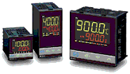
RB Series Single Loop Controller:
Save space with a RB series temperature controller that gives out-standing control capability and comprehensive functions incorporated into a slim body case.
-
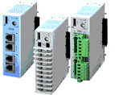
SRZ Modular Type Multi Loop Controllers:
The SRZ (Z-TIO) is 4 channels digital temperature controller packed into one compact module.
Z-TIO (4 channels type) module can have 4 CT (current transformer) inputs. 3-phase heater can be monitored by allocating two CTs to one control channel.
Modules can be remotely distributed by connecting them via RS-485 communication. Up to 16 Z-TIO (128 DIs) and 16 Z-DIO (128 DOs) modules can be connected to one serial communication line by distributed installation.
The maximum number of modules connected by distributed installation is 31 modules.